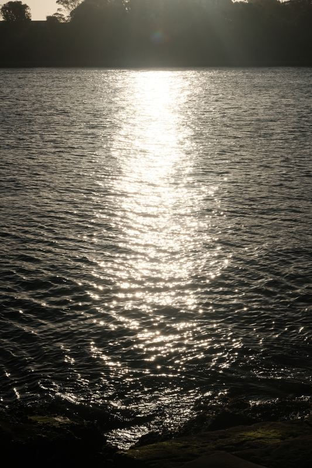
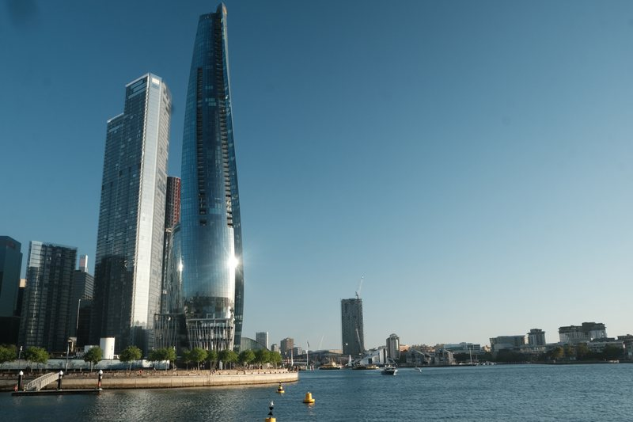
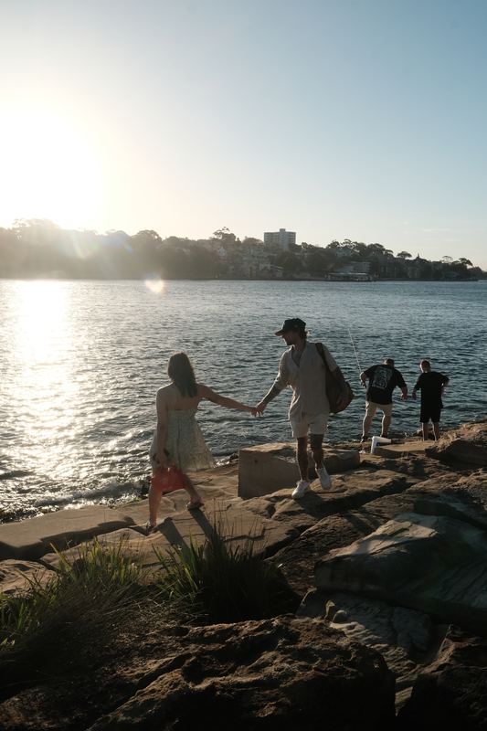
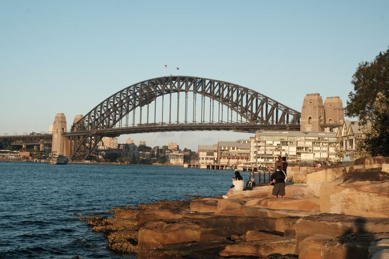
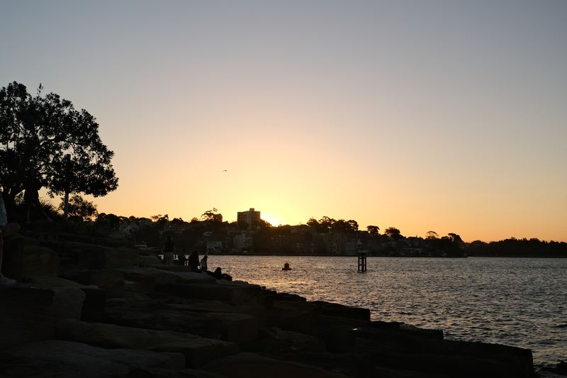
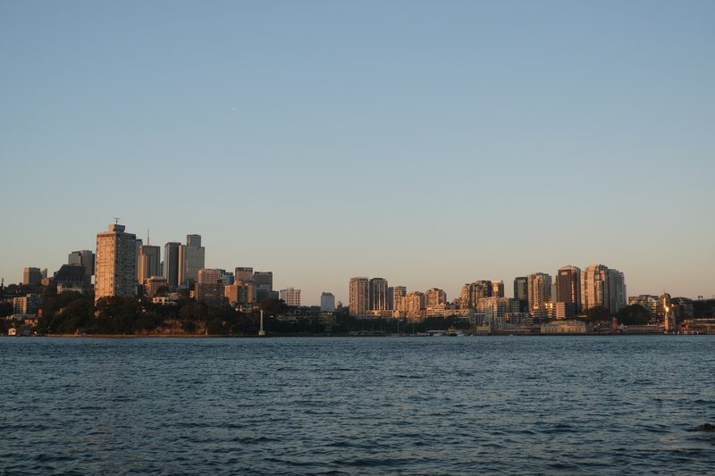
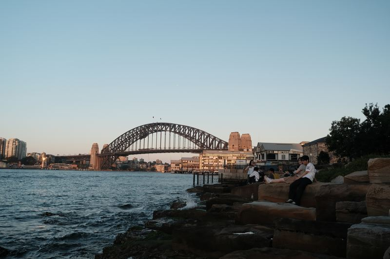
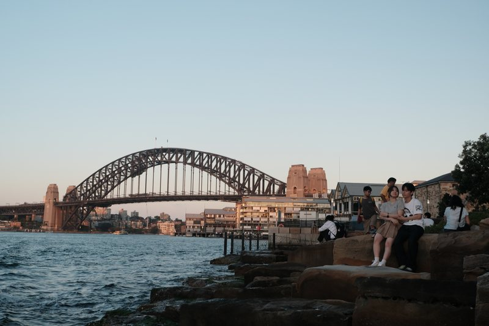
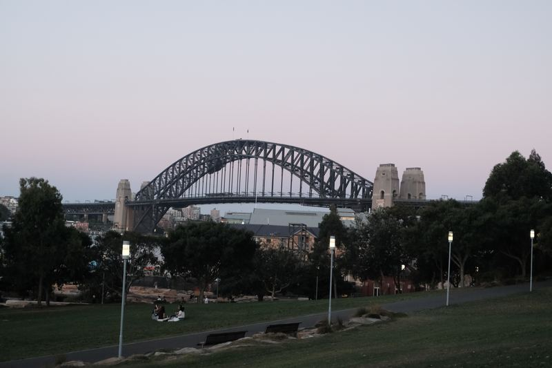
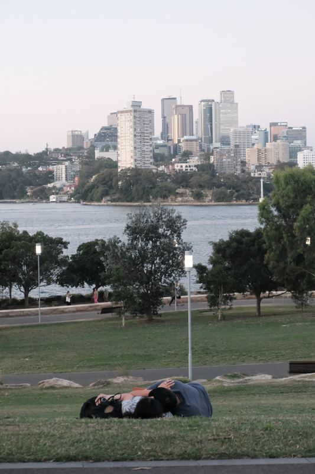

Landscape · Album 01 / 13
I went for a walk around the harbour and kept shooting for about an hour, from just after six until the sun went down. They're in the order I took them, so you can watch the light change as you scroll.










 Next albumAround the citySydney CBD · 2024 · 6 photos
Next albumAround the citySydney CBD · 2024 · 6 photos
Want photos like these? DM me on Instagram or call 0490 324 875.